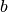
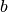

Pioneer2dx¶
Este package se encarga de todo lo relacionado con la simulación propiamente deicha. La simulación se hace mediante Gazebo usando sus motores fisicos y su motor gráfico (OGRE3). Sumado a que se utilizan modelos tridimencionales (.dae) generados con Blender o con cualquier otro editor.
A modo ilustrativo, con SolidWorks se pueden generar los mismos modelos sumado a que se incorporan los momentos de intercia y otros parámetros que ayudan a realizar una simulación más fieldigna.

Modelo del robot diferencial¶
El modelo del robot implementado es del tipo diferencial, ya sea con 2 ruedas o con 4 pero en configuración diferencial. El modelo físico implementado corresponde al robot diferencial de 2 ruedas. Sin embargo es relativamente sencillo modificarlo desde el archivo xml Detalle sobre archivos XML (.xml, .xacro, .sdf).
Modelo matemático¶
{kind=link}
Asumiento que el punto de interés se encuentra en el punto medio entre el eje de las ruedas (), considerando la figura anterior, el sistema resulta:
además la relación entre las velocidades angulares de las ruedas y las señales de control resulta:
siendo  el radio de las ruedas (asumiendo que son iguales),  es la distancia entre las ruedas y las velocidades angulares de la rueda izquierda y derecha respectivamente.
el radio de las ruedas (asumiendo que son iguales),  es la distancia entre las ruedas y las velocidades angulares de la rueda izquierda y derecha respectivamente.
Controladores¶
La libreria de los controladores, mediante los plugins de Gazebo, permite controlar las velocidades de cada rueda. El controlador que controla cada rueda aplica la velocidaded publicada en el topic XXX instantáneamente, es decir hay seguimiento perfecto de las velocidades angulares. Para publicar mensajes en el topic del controlador, se puede hacer mediante la librería
- Los comandos de la librería son:
a : para
d : para

w : para
s : para
x : posiciona al vehículo en el del mapa.
r : quita el modelo del mapa y lo vuelve a poner en el .
q : (quit), sale del programa.
c : Dá las acciones de control a lazo abierto para realizar un cuadrado.
8 : Dá las acciones de control a lazo abierto para realizar un .
o : Dá las acciones de control a lazo abierto para realizar un .
En caso de que la trayectória sea parametrizable, se obtienen los valores de mediante cinemática inversa.
Ejemplo de uso: …………………..
Odometría¶
La odometría se calcula a partir de las señales de control. Se discretiza el sistema y se calculan los estados para cada instante de tiempo (). El resultado de este calculo se publica en el tipic XXXX en formato de mensaje xxx.
Grountruth¶
Gracias a Gazebo, se puede conocer la pose (posición y orientación) y la cinématica del vehículo en todo instante de tiempo. Esto lo hace ideal para constrastar las metodologías bajo desarrollo. El resultado se publica en el tipic XXXX en formato de mensaje xxx.
Launch files¶
Los launch files sirven para juntar todas las configuraciones en un solo archivo y lanzarlas con un solo comando (roslaunch). Ejemplo de uso: ……………………..
Dentro de estos launch files, estan los que lanzan todo el entorno de simulación y los que enmascaran un conjunto de comandos que son incomodos de escribir en la terminal cada vez que se requiera utilizar. Para más información visitar roslaunch/XML .
Lista de launchs files predefinidos¶
Todos los mapas parten con la configuración básica definida en el archivo base_v4.world (poner link para verlo). Luego la definición del entorno está definida en los siguientes archivos:
Limpio
Plantación ordenada
Complex Surface
Procedimiento¶
Pararse en la carpeta del modulo pioneer2dx y en cada terminal poner:
source ws/devel/setup.bash
Luego para lanzar la simulación:
roslaunch pioneer2dx plantacion_ordenada.launch
Para lanzar el controlador y manipular el robot:
python scripts/differential_controller.py
Para ver la data que generan los sensores en tiempo real, lanzar rviz:
rosrun rviz rviz -d config/rviz_config2.rviz
Para grabar los datos generados hacer:
roslaunch pioneer2dx lidar_bag.launch
El .bag generado se almacena en slam_benchmark/bags/laser_data.bag listo para ser analizado. CUIDADO: el archivo creado sobrescribe el archivo anterior si este existe. (numerar los archivos generados? esto genera un problema para el código de slam_bencmark…)